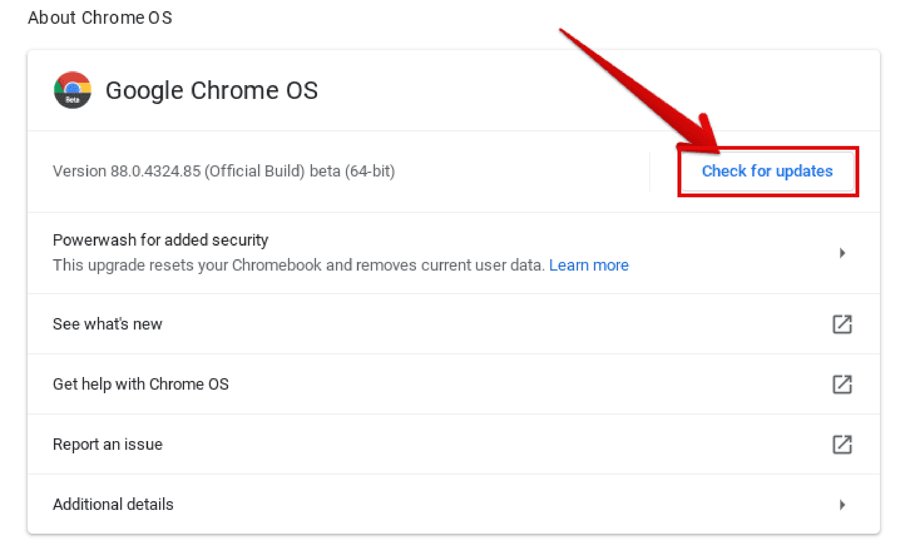

Due to ChromeOS's simplistic design, more effort is required to fix problems on a Chromebook. Below are 4 aspects of keeping your Chromebook healthy:
Improving Start Up Speed
A Chrombook already has significantly faster boot up times compared to other computers. Despite this, changing your startup settings is the easist way to improve a Chromebook's start up speed.
Steps for changing startup setup options:
- Open settings. Either press the magnifying glass on the keyboard and type in "settings" or open it with the menu shown below:
- Choose "On startup" from the settings menu
- Choose options depending on your priorities
If you wish to return back to your last work session instantly, choose the "Continue where you left off" option.
If you want to boot up on a fresh page, choose the "Open the New Tab page" option.
Maintaining device performance
Below are tips on improving the speed of your Chromebook:
- Update Chromebook
- Open settings. Either press the magnifying glass on the keyboard and type in "settings" or open it with the menu shown below:
- Choose "About Chrome OS" from the settings menu
- Choose "Check for updates" 
- If there is an update for your device, there will be a prompt saying "Update Available". Otherwise, there will be a message saying "Your Chromebook is up to date".
- Clear Some RAM on Device
- Press "Esc + Search" together. This opens task manager. If you see any extension or tab you aren't using, terminate it.
- Uninstall Unwanted Applications
- There are plenty of unnecessary applications running in the background, and deleting them frees up storage and memory.
Cleaning up system storage
Below are tips on cleaning up storage space on your Chromebook:
- Delete unwanted files from your Chromebook
- If you want more space, you can move files to Google Drive.
- Clear your browsing history and download history
- Uninstall unwanted applications
- There are plenty of unnecessary applications running in the background, and deleting them frees up storage and memory.
- Remove any extra accounts from your Chromebook
- Only the files stored on your Chromebook wil be deleted. The actual account and information, including bookmarks, won't be deleted.
Keeping your device secure
Below are tips on improving the security of your Chromebook:
- Secure your Google account
- Use a strong password.
- Use two-factor authentification to protect your account.
- Manage Logins
- Lock Chromebook down to select users:
- Update Chrome OS
- Specific directions are here.
- Sleep Locking
- 6 ways to enter sleep mode, which requires a password to unlock:
- Click Lock icon from the menu shown below:
- Press magnifying glass + "L" on the keyboard.
- Close the lid.
- Press and hold the "Lock" button on the keyboard.
- Press and hold the power button, then press "Lock".
- Walk away from your Chromebook.
- When plugged in: screen turns off in 8 minutes and goes to sleep in 30 minutes by default.
- When not plugged in: screen turns off in 6 minutes and goes to sleep in 10 minutes by default.
- If Chrombook is stolen
- Sign out of Chromebook
- Go to your Google Account.
- Select "Security".
- Select "Manage Devices".
- Select your Chromebook.
- From this screen, you can sign out of your Chromebook. This keeps your data safe, despite not being able to physically recover your Chromebook.